Links
I don't update this very often, so some links may be dead. These are sites I find interesting for one reason or another.
I've increased the display sizing of these slightly.
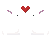
Buttons
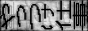
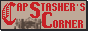
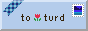
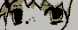
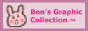
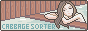
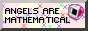
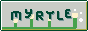
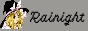
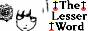
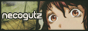
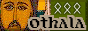
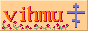
Other Sites
colexdev: A great example of digital minimalism, with a focus on nutrition, philosophy, technology, and more.
mental labour: Philosophy and a minimalistic design.
sor: Lots of really helpful technology-related information and resources. I like the focus on suckless software.
My Button
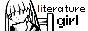